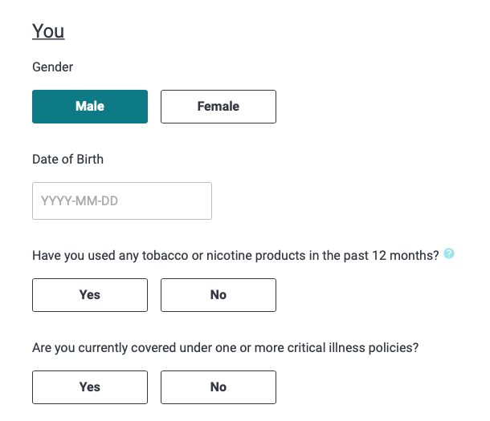

56 lines of CFT to 2 lines of Serverless - a lesson from a noob on the frontlines
Glenn Horan - @batGlenn13144 lines of CFT to 2 lines of Serverless - a lesson from a noob on the frontlines
Glenn Horan - @batGlenn13How I learned to stop worrying and love Serverless
Glenn Horan - @batGlenn13
User fills out details

Details hit our rating sheets

User gets price as output

- Our rating spreadsheets are updated frequently
- Spreadsheets are stored in S3
- Event driven process needed to inform our Software of changes
We came up with this